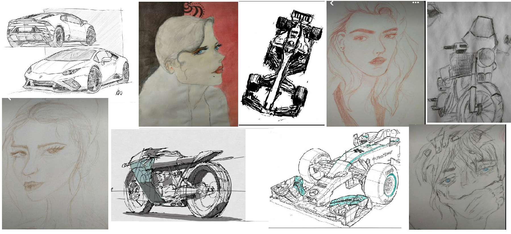

Ben yaklaşık 5 yaşındayken evimize bilgisayar gelmiş olduğu için küçük yaşlardan beri bilgisayarlara ilgim var , tabi bilgisayar oyunlarına da. O zamanlar internet her evde yaygın olmadığı için genel olarak bilgisayarda mevcut olan oyunları veya sağdan soldan kopyaladığım oyunlarla yetiniyordum. İnternete erişimim oldukça bilgisayar, oyun geliştirme ve yazılım konularında kendi çapımda araştırmalar yapmaya başladım. Bu bölümü seçmemdeki en büyük etken bu ilgimdi sanırım. Tabi bu bölümü yazınca istediğiniz kadar video oyunu oynayamıyorsunuz o ayrı.
Spor olarak voleybol ve badmintonu hep sevmişimdir. Bunun yanında bisiklet sürmek en çok sevdiğim spor olabilir. 7yaşımdan beri bisiklet sürüyorum. Kaç kere düştüm artık ben bile hatırlamıyorum. Hız tutkunuyum sanırım bu konuda. Arabalarda her zaman benim için bir tutku olmuştur.
Lise yıllarında kendi çapımda yazdığım birkaç site projesi ve ufak oyunlarla kodlama becerilerimi geliştirmeye çalıştım. Ancak amatör çalışmalar olduğu için çok ayrıntıya girmesek daha iyi.Vietnam Flashbacks. Yine de üniversiteye başlamadan önce ilgi duyduğum bir alanda kendimi geliştirmek sevindirici bir gelişmeydi. Ancak olması gerektiği gibi kod yazamıyordum. Çünkü algoritmalar...
Bilgisayardan uzak olduğum zamanlarda ise en çok vakit harcadığım hobim resim yapmak ve kitap okumaktı, hala devam ediyor bu hobilerim gerçi. Ayrıca son zamanlarda kendi çapımda müzik de yapmaya başladım. Tam da bu yazının altında çalmaya başlayacak olan şarkı da onlardan biri, tabi bir de YouTube linkim, abone olabilirsiniz de tabi...
YouTube

Son zamanlarda üzerine çalıştığım resimler

Çok kitap okuduğumdan bahsetmiştim, belki biraz fazla. Favorilerim arasında Dan Brown , Tess Gerittsen, Ahmet Altan, Geroge Orwell, Paulo Coelho, Tostoy, Albert Camus... ve daha niceleri. Biraz karışık bir sıralama oldu. Polisiye ve felsefe özellikle vazgeçilmezlerimdendir. Son zamanlarda sahaflardan veya satış platformlarından olabildiğince uzak durmaya çalışıyorum aldıkça alasım geliyor napayım. Yandaki gibi iki raf kitap daha var henüz okuyamadığım. Bu ödevi hazırlarken bir yandan da yeni başladığım 'Kazanan Yalnızdır' romanına devam etmek için sabırsızlanıyorum. Yazarı Paulo Coelho, son zamanlarda favori yazarlarımdan birkaçı.